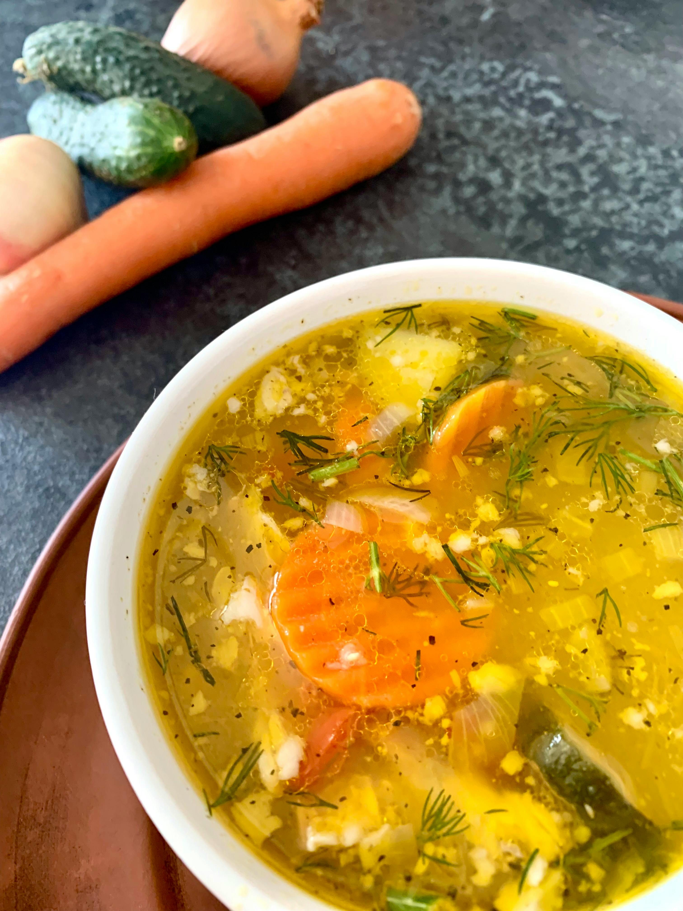

Orzo, Leek, and Dill Soup

Description
Vegan orzo and leek soup topped with fresh dill. A light and delicious soup recipe to enjoy in the winter or summer. I’ve used orzo but you can can swap this for pulses or grains such as bulgarwheat or couscous. This is ready in less than half an hour so brilliant for an easy dinner recipe.
Ingredients
- 1 Tbsp olive oil
- 1 red onion
- 3 large cloves garlic
- 1 carrot, diced
- 1 leek
- 1 tsp dried thyme
- 5 oz orzo pasta
- 6 cups vegetable stock
- 4 sprigs fresh dill
- Salt & pepper to taste
- ½ lemon, squeezed
- Extra virgin olive oil to garnish
- Optional: Buttered and toasted Tuscan bread
Recipe
- Start by finely chopping the garlic and onion, dice the carrot and leek and add to a large pot with a drizzle of olive oil, salt and pepper and sweat down for around 6 minutes.
- Boil the kettle and add the water to a bowl with the stock cube and whisk until dissolved.
- Add the orzo to the pot along with the stock, dried thyme and leave to bubble away for around 12 minutes.
- Add a little more seasoning of salt and pepper, the squeeze of lemon and fresh dill and taste test.
- Once cooked serve up with a drizzle of extra virgin olive oil on each bowl with a sprig of fresh dill.
Recipe credit: Lucy & Lentils
Image credit: Helen Brudna
Home